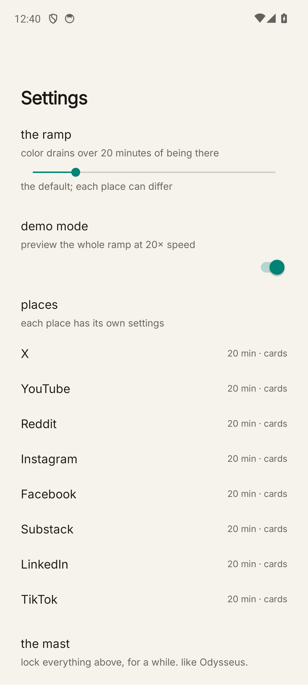
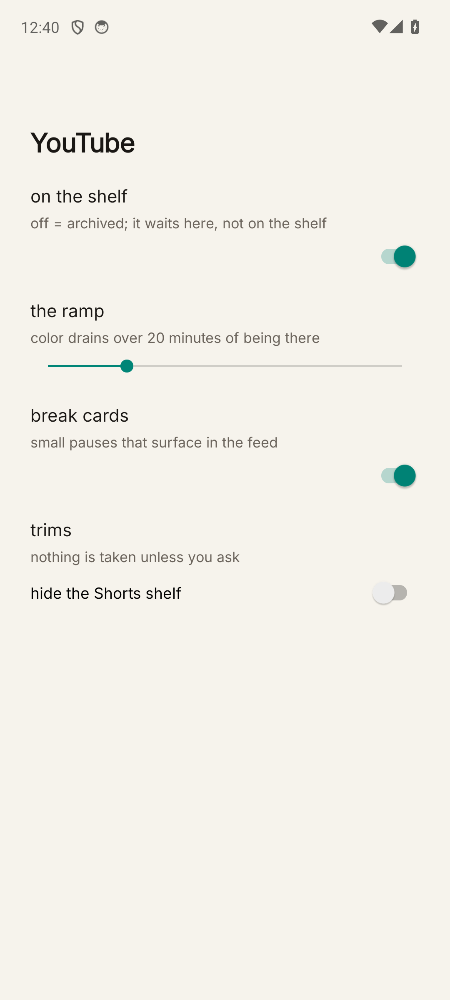
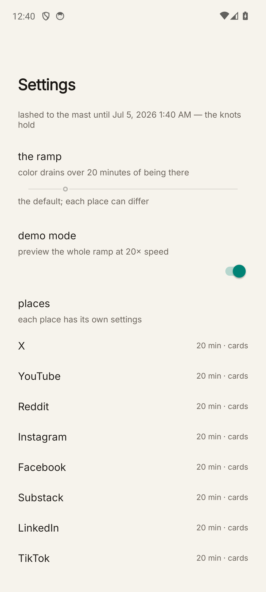

Seeglass v2
built from your bedtime notes · night of July 5–6 · all verified on emulator
What changed
- Per-place settings — your mock, realized: settings → tap any place → its own page: on the shelf (off = archived), the ramp (slider, leftmost = no ramp — for when the phone's already gray), break cards on/off, trims (Shorts shelf and Explore are now independent, per your ask).
- Archive — long-press any shelf row → "send to the archive." It disappears from the shelf and waits in settings. Restore with the on-the-shelf switch.
- Tie yourself to the mast — bottom of settings. Locks everything (ramps, trims, cards, archive changes) for an hour / until morning / three days / a week. While lashed, settings show but won't move, with "the knots hold" and the release date. Demo mode stays available (it only speeds the gray up). No escape hatch — by design. The knots do hold.
- X login fix attempt — X now gets the WebView's truthful user-agent instead of my Chrome spoof. Theory: X's bot check caught the UA contradicting the browser's client hints (the others don't check). Please try logging in again — if it still fails, tell me what the failure looks like (error message? silent loop? button does nothing?) and I'll go deeper.
- Ramp stays linear — eased curve built, then reverted per your note.
- Break cards were already on everywhere; now they're per-place switches. First card ~40% into your ramp, then every ~30% — on a 20-min ramp: ~min 8, then ~every 6.



Update the phone
cd ~/Desktop/PhoneThatCares/.claude/worktrees/seeglass-overnight/_context/seeglass-2026-07-05 adb install -r seeglass.apk
Logins and settings survive the update (-r keeps app data).
Graydawn is unchanged tonight.
Defaults I chose (flag anything wrong)
- Mast locks everything including loosening AND tightening — simplest honest rule for v1.
- Ramp slider's leftmost stop = "no color ramp here"; break cards and spacing still run on the default clock when the ramp is off.
- Archiving from the shelf works even while masted (it's a tightening move); un-archiving needs settings, which the mast holds shut.
- Mast durations: hour / morning (7am) / 3 days / week.
Still open
- X login — fix attempt shipped, needs your retry to confirm.
- Didn't hear how the Graydawn chord felt on real hardware — curious.
- Backlog unchanged: Custom-Tab Google auth, tip jar, Play-listing pass.
Verified tonight: build green · settings + per-place pages render · mast locks and labels correctly · archive removes/restores · ramp still drains (saturation 0.12 → 0.006 in demo run) · no crashes in logcat.